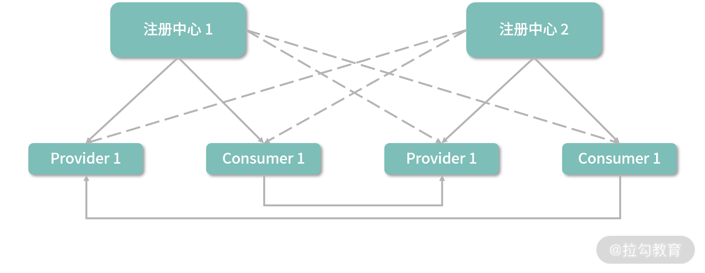

- 00 开篇词 深入掌握 Dubbo 原理与实现，提升你的职场竞争力.md
- 01 Dubbo 源码环境搭建：千里之行，始于足下.md
- 02 Dubbo 的配置总线：抓住 URL，就理解了半个 Dubbo.md
- 03 Dubbo SPI 精析，接口实现两极反转（上）.md
- 04 Dubbo SPI 精析，接口实现两极反转（下）.md
- 05 海量定时任务，一个时间轮搞定.md
- 06 ZooKeeper 与 Curator，求你别用 ZkClient 了（上）.md
- 07 ZooKeeper 与 Curator，求你别用 ZkClient 了（下）.md
- 08 代理模式与常见实现.md
- 09 Netty 入门，用它做网络编程都说好（上）.md
- 10 Netty 入门，用它做网络编程都说好（下）.md
- 11 简易版 RPC 框架实现（上）.md
- 12 简易版 RPC 框架实现（下）.md
- 13 本地缓存：降低 ZooKeeper 压力的一个常用手段.md
- 14 重试机制是网络操作的基本保证.md
- 15 ZooKeeper 注册中心实现，官方推荐注册中心实践.md
- 16 Dubbo Serialize 层：多种序列化算法，总有一款适合你.md
- 17 Dubbo Remoting 层核心接口分析：这居然是一套兼容所有 NIO 框架的设计？.md
- 18 Buffer 缓冲区：我们不生产数据，我们只是数据的搬运工.md
- 19 Transporter 层核心实现：编解码与线程模型一文打尽（上）.md
- 20 Transporter 层核心实现：编解码与线程模型一文打尽（下）.md
- 21 Exchange 层剖析：彻底搞懂 Request-Response 模型（上）.md
- 22 Exchange 层剖析：彻底搞懂 Request-Response 模型（下）.md
- 23 核心接口介绍，RPC 层骨架梳理.md
- 24 从 Protocol 起手，看服务暴露和服务引用的全流程（上）.md
- 25 从 Protocol 起手，看服务暴露和服务引用的全流程（下）.md
- 26 加餐：直击 Dubbo “心脏”，带你一起探秘 Invoker（上）.md
- 27 加餐：直击 Dubbo “心脏”，带你一起探秘 Invoker（下）.md
- 28 复杂问题简单化，代理帮你隐藏了多少底层细节？.md
- 29 加餐：HTTP 协议 + JSON-RPC，Dubbo 跨语言就是如此简单.md
- 30 Filter 接口，扩展 Dubbo 框架的常用手段指北.md
- 31 加餐：深潜 Directory 实现，探秘服务目录玄机.md
- 32 路由机制：请求到底怎么走，它说了算（上）.md
- 33 路由机制：请求到底怎么走，它说了算（下）.md
- 34 加餐：初探 Dubbo 动态配置的那些事儿.md
- 35 负载均衡：公平公正物尽其用的负载均衡策略，这里都有（上）.md
- 36 负载均衡：公平公正物尽其用的负载均衡策略，这里都有（下）.md
- 37 集群容错：一个好汉三个帮（上）.md
- 38 集群容错：一个好汉三个帮（下）.md
- 39 加餐：多个返回值不用怕，Merger 合并器来帮忙.md
- 40 加餐：模拟远程调用，Mock 机制帮你搞定.md
- 41 加餐：一键通关服务发布全流程.md
- 42 加餐：服务引用流程全解析.md
- 43 服务自省设计方案：新版本新方案.md
- 44 元数据方案深度剖析，如何避免注册中心数据量膨胀？.md
- 45 加餐：深入服务自省方案中的服务发布订阅（上）.md
- 46 加餐：深入服务自省方案中的服务发布订阅（下）.md
- 47 配置中心设计与实现：集中化配置 and 本地化配置，我都要（上）.md
- 48 配置中心设计与实现：集中化配置 and 本地化配置，我都要（下）.md
- 49 结束语 认真学习，缩小差距.md
38 集群容错：一个好汉三个帮（下）
你好，我是杨四正，今天我和你分享的主题是集群容错：一个好汉三个帮（下篇）。
在上一课时，我们介绍了 Dubbo Cluster 层中集群容错机制的基础知识，还说明了 Cluster 接口的定义以及其各个实现类的核心功能。同时，我们还分析了 AbstractClusterInvoker 抽象类以及 AbstractCluster 抽象实现类的核心实现。
那接下来在本课时，我们将介绍 Cluster 接口的全部实现类，以及相关的 Cluster Invoker 实现类。
FailoverClusterInvoker
通过前面对 Cluster 接口的介绍我们知道，Cluster 默认的扩展实现是 FailoverCluster，其 doJoin() 方法中会创建一个 FailoverClusterInvoker 对象并返回，具体实现如下：
public <T> AbstractClusterInvoker<T> doJoin(Directory<T> directory) throws RpcException {
return new FailoverClusterInvoker<>(directory);
}
FailoverClusterInvoker 会在调用失败的时候，自动切换 Invoker 进行重试。下面来看 FailoverClusterInvoker 的核心实现：
public Result doInvoke(Invocation invocation, final List<Invoker<T>> invokers, LoadBalance loadbalance) throws RpcException {
List<Invoker<T>> copyInvokers = invokers;
// 检查copyInvokers集合是否为空，如果为空会抛出异常
checkInvokers(copyInvokers, invocation);
String methodName = RpcUtils.getMethodName(invocation);
// 参数重试次数，默认重试2次，总共执行3次
int len = getUrl().getMethodParameter(methodName, RETRIES_KEY, DEFAULT_RETRIES) + 1;
if (len <= 0) {
len = 1;
}
RpcException le = null;
// 记录已经尝试调用过的Invoker对象
List<Invoker<T>> invoked = new ArrayList<Invoker<T>>(copyInvokers.size());
Set<String> providers = new HashSet<String>(len);
for (int i = 0; i < len; i++) {
// 第一次传进来的invokers已经check过了，第二次则是重试，需要重新获取最新的服务列表
if (i > 0) {
checkWhetherDestroyed();
// 这里会重新调用Directory.list()方法，获取Invoker列表
copyInvokers = list(invocation);
// 检查copyInvokers集合是否为空，如果为空会抛出异常
checkInvokers(copyInvokers, invocation);
}
// 通过LoadBalance选择Invoker对象，这里传入的invoked集合，
// 就是前面介绍AbstractClusterInvoker.select()方法中的selected集合
Invoker<T> invoker = select(loadbalance, invocation, copyInvokers, invoked);
// 记录此次要尝试调用的Invoker对象，下一次重试时就会过滤这个服务
invoked.add(invoker);
RpcContext.getContext().setInvokers((List) invoked);
try {
// 调用目标Invoker对象的invoke()方法，完成远程调用
Result result = invoker.invoke(invocation);
// 经过尝试之后，终于成功，这里会打印一个警告日志，将尝试过来的Provider地址打印出来
if (le != null && logger.isWarnEnabled()) {
logger.warn("...");
}
return result;
} catch (RpcException e) {
if (e.isBiz()) { // biz exception.
throw e;
}
le = e;
} catch (Throwable e) { // 抛出异常，表示此次尝试失败，会进行重试
le = new RpcException(e.getMessage(), e);
} finally {
// 记录尝试过的Provider地址，会在上面的警告日志中打印出来
providers.add(invoker.getUrl().getAddress());
}
}
// 达到重试次数上限之后，会抛出异常，其中会携带调用的方法名、尝试过的Provider节点的地址(providers集合)、全部的Provider个数(copyInvokers集合)以及Directory信息
throw new RpcException(le.getCode(), "...");
}
FailbackClusterInvoker
FailbackCluster 是 Cluster 接口的另一个扩展实现，扩展名是 failback，其 doJoin() 方法中创建的 Invoker 对象是 FailbackClusterInvoker 类型，具体实现如下：
public <T> AbstractClusterInvoker<T> doJoin(Directory<T> directory) throws RpcException {
return new FailbackClusterInvoker<>(directory);
}
FailbackClusterInvoker 在请求失败之后，返回一个空结果给 Consumer，同时还会添加一个定时任务对失败的请求进行重试。下面来看 FailbackClusterInvoker 的具体实现：
protected Result doInvoke(Invocation invocation, List<Invoker<T>> invokers, LoadBalance loadbalance) throws RpcException {
Invoker<T> invoker = null;
try {
// 检测Invoker集合是否为空
checkInvokers(invokers, invocation);
// 调用select()方法得到此次尝试的Invoker对象
invoker = select(loadbalance, invocation, invokers, null);
// 调用invoke()方法完成远程调用
return invoker.invoke(invocation);
} catch (Throwable e) {
// 请求失败之后，会添加一个定时任务进行重试
addFailed(loadbalance, invocation, invokers, invoker);
return AsyncRpcResult.newDefaultAsyncResult(null, null, invocation); // 请求失败时，会返回一个空结果
}
}
在 doInvoke() 方法中，请求失败时会调用 addFailed() 方法添加定时任务进行重试，默认每隔 5 秒执行一次，总共重试 3 次，具体实现如下：
private void addFailed(LoadBalance loadbalance, Invocation invocation, List<Invoker<T>> invokers, Invoker<T> lastInvoker) {
if (failTimer == null) {
synchronized (this) {
if (failTimer == null) { // Double Check防止并发问题
// 初始化时间轮，这个时间轮有32个槽，每个槽代表1秒
failTimer = new HashedWheelTimer(
new NamedThreadFactory("failback-cluster-timer", true),
1,
TimeUnit.SECONDS, 32, failbackTasks);
}
}
}
// 创建一个定时任务
RetryTimerTask retryTimerTask = new RetryTimerTask(loadbalance, invocation, invokers, lastInvoker, retries, RETRY_FAILED_PERIOD);
try {
// 将定时任务添加到时间轮中
failTimer.newTimeout(retryTimerTask, RETRY_FAILED_PERIOD, TimeUnit.SECONDS);
} catch (Throwable e) {
logger.error("...");
}
}
在 RetryTimerTask 定时任务中，会重新调用 select() 方法筛选合适的 Invoker 对象，并尝试进行请求。如果请求再次失败且重试次数未达到上限，则调用 rePut() 方法再次添加定时任务，等待进行重试；如果请求成功，也不会返回任何结果。RetryTimerTask 的核心实现如下：
public void run(Timeout timeout) {
try {
// 重新选择Invoker对象，注意，这里会将上次重试失败的Invoker作为selected集合传入
Invoker<T> retryInvoker = select(loadbalance, invocation, invokers, Collections.singletonList(lastInvoker));
lastInvoker = retryInvoker;
retryInvoker.invoke(invocation); // 请求对应的Provider节点
} catch (Throwable e) {
if ((++retryTimes) >= retries) { // 重试次数达到上限，输出警告日志
logger.error("...");
} else {
rePut(timeout); // 重试次数未达到上限，则重新添加定时任务，等待重试
}
}
}
private void rePut(Timeout timeout) {
if (timeout == null) { // 边界检查
return;
}
Timer timer = timeout.timer();
if (timer.isStop() || timeout.isCancelled()) { // 检查时间轮状态、检查定时任务状态
return;
}
// 重新添加定时任务
timer.newTimeout(timeout.task(), tick, TimeUnit.SECONDS);
}
FailfastClusterInvoker
FailfastCluster 的扩展名是 failfast，在其 doJoin() 方法中会创建 FailfastClusterInvoker 对象，具体实现如下：
public <T> AbstractClusterInvoker<T> doJoin(Directory<T> directory) throws RpcException {
return new FailfastClusterInvoker<>(directory);
}
FailfastClusterInvoker 只会进行一次请求，请求失败之后会立即抛出异常，这种策略适合非幂等的操作，具体实现如下：
public Result doInvoke(Invocation invocation, List<Invoker<T>> invokers, LoadBalance loadbalance) throws RpcException {
checkInvokers(invokers, invocation);
// 调用select()得到此次要调用的Invoker对象
Invoker<T> invoker = select(loadbalance, invocation, invokers, null);
try {
return invoker.invoke(invocation); // 发起请求
} catch (Throwable e) {
// 请求失败，直接抛出异常
if (e instanceof RpcException && ((RpcException) e).isBiz()) {
throw (RpcException) e;
}
throw new RpcException("...");
}
}
FailsafeClusterInvoker
FailsafeCluster 的扩展名是 failsafe，在其 doJoin() 方法中会创建 FailsafeClusterInvoker 对象，具体实现如下：
public <T> AbstractClusterInvoker<T> doJoin(Directory<T> directory) throws RpcException {
return new FailsafeClusterInvoker<>(directory);
}
FailsafeClusterInvoker 只会进行一次请求，请求失败之后会返回一个空结果，具体实现如下：
public Result doInvoke(Invocation invocation, List<Invoker<T>> invokers, LoadBalance loadbalance) throws RpcException {
try {
// 检测Invoker集合是否为空
checkInvokers(invokers, invocation);
// 调用select()得到此次要调用的Invoker对象
Invoker<T> invoker = select(loadbalance, invocation, invokers, null);
// 发起请求
return invoker.invoke(invocation);
} catch (Throwable e) {
// 请求失败之后，会打印一行日志并返回空结果
logger.error("...");
return AsyncRpcResult.newDefaultAsyncResult(null, null, invocation);
}
}
ForkingClusterInvoker
ForkingCluster 的扩展名称为 forking，在其 doJoin() 方法中，会创建一个 ForkingClusterInvoker 对象，具体实现如下：
public <T> AbstractClusterInvoker<T> doJoin(Directory<T> directory) throws RpcException {
return new ForkingClusterInvoker<>(directory);
}
ForkingClusterInvoker 中会维护一个线程池（executor 字段，通过 Executors.newCachedThreadPool() 方法创建的线程池），并发调用多个 Provider 节点，只要有一个 Provider 节点成功返回了结果，ForkingClusterInvoker 的 doInvoke() 方法就会立即结束运行。
ForkingClusterInvoker 主要是为了应对一些实时性要求较高的读操作，因为没有并发控制的多线程写入，可能会导致数据不一致。
ForkingClusterInvoker.doInvoke() 方法首先从 Invoker 集合中选出指定个数（forks 参数决定）的 Invoker 对象，然后通过 executor 线程池并发调用这些 Invoker，并将请求结果存储在 ref 阻塞队列中，则当前线程会阻塞在 ref 队列上，等待第一个请求结果返回。下面是 ForkingClusterInvoker 的具体实现：
public Result doInvoke(final Invocation invocation, List<Invoker<T>> invokers, LoadBalance loadbalance) throws RpcException {
try {
// 检查Invoker集合是否为空
checkInvokers(invokers, invocation);
final List<Invoker<T>> selected;
// 从URL中获取forks参数，作为并发请求的上限，默认值为2
final int forks = getUrl().getParameter(FORKS_KEY, DEFAULT_FORKS);
final int timeout = getUrl().getParameter(TIMEOUT_KEY, DEFAULT_TIMEOUT);
if (forks <= 0 || forks >= invokers.size()) {
// 如果forks为负数或是大于Invoker集合的长度，会直接并发调用全部Invoker
selected = invokers;
} else {
// 按照forks指定的并发度，选择此次并发调用的Invoker对象
selected = new ArrayList<>(forks);
while (selected.size() < forks) {
Invoker<T> invoker = select(loadbalance, invocation, invokers, selected);
if (!selected.contains(invoker)) {
selected.add(invoker); // 避免重复选择
}
}
}
RpcContext.getContext().setInvokers((List) selected);
// 记录失败的请求个数
final AtomicInteger count = new AtomicInteger();
// 用于记录请求结果
final BlockingQueue<Object> ref = new LinkedBlockingQueue<>();
for (final Invoker<T> invoker : selected) { // 遍历 selected 列表
executor.execute(() -> { // 为每个Invoker创建一个任务，并提交到线程池中
try {
// 发起请求
Result result = invoker.invoke(invocation);
// 将请求结果写到ref队列中
ref.offer(result);
} catch (Throwable e) {
int value = count.incrementAndGet();
if (value >= selected.size()) {
// 如果失败的请求个数超过了并发请求的个数，则向ref队列中写入异常
ref.offer(e);
}
}
});
}
try {
// 当前线程会阻塞等待任意一个请求结果的出现
Object ret = ref.poll(timeout, TimeUnit.MILLISECONDS);
if (ret instanceof Throwable) { // 如果结果类型为Throwable，则抛出异常
Throwable e = (Throwable) ret;
throw new RpcException("...");
}
return (Result) ret; // 返回结果
} catch (InterruptedException e) {
throw new RpcException("...");
}
} finally {
// 清除上下文信息
RpcContext.getContext().clearAttachments();
}
}
BroadcastClusterInvoker
BroadcastCluster 这个 Cluster 实现类的扩展名为 broadcast，在其 doJoin() 方法中创建的是 BroadcastClusterInvoker 类型的 Invoker 对象，具体实现如下：
public <T> AbstractClusterInvoker<T> doJoin(Directory<T> directory) throws RpcException {
return new BroadcastClusterInvoker<>(directory);
}
在 BroadcastClusterInvoker 中，会逐个调用每个 Provider 节点，其中任意一个 Provider 节点报错，都会在全部调用结束之后抛出异常。BroadcastClusterInvoker通常用于通知类的操作，例如通知所有 Provider 节点更新本地缓存。
下面来看 BroadcastClusterInvoker 的具体实现：
public Result doInvoke(final Invocation invocation, List<Invoker<T>> invokers, LoadBalance loadbalance) throws RpcException {
// 检测Invoker集合是否为空
checkInvokers(invokers, invocation);
RpcContext.getContext().setInvokers((List) invokers);
RpcException exception = null; // 用于记录失败请求的相关异常信息
Result result = null;
// 遍历所有Invoker对象
for (Invoker<T> invoker : invokers) {
try {
// 发起请求
result = invoker.invoke(invocation);
} catch (RpcException e) {
exception = e;
logger.warn(e.getMessage(), e);
} catch (Throwable e) {
exception = new RpcException(e.getMessage(), e);
logger.warn(e.getMessage(), e);
}
}
if (exception != null) { // 出现任何异常，都会在这里抛出
throw exception;
}
return result;
}
AvailableClusterInvoker
AvailableCluster 这个 Cluster 实现类的扩展名为 available，在其 join() 方法中创建的是 AvailableClusterInvoker 类型的 Invoker 对象，具体实现如下：
public <T> Invoker<T> join(Directory<T> directory) throws RpcException {
return new AvailableClusterInvoker<>(directory);
}
在 AvailableClusterInvoker 的 doInvoke() 方法中，会遍历整个 Invoker 集合，逐个调用对应的 Provider 节点，当遇到第一个可用的 Provider 节点时，就尝试访问该 Provider 节点，成功则返回结果；如果访问失败，则抛出异常终止遍历。
下面是 AvailableClusterInvoker 的具体实现：
public Result doInvoke(Invocation invocation, List<Invoker<T>> invokers, LoadBalance loadbalance) throws RpcException {
for (Invoker<T> invoker : invokers) { // 遍历整个Invoker集合
if (invoker.isAvailable()) { // 检测该Invoker是否可用
// 发起请求，调用失败时的异常会直接抛出
return invoker.invoke(invocation);
}
}
// 没有找到可用的Invoker，也会抛出异常
throw new RpcException("No provider available in " + invokers);
}
MergeableClusterInvoker
MergeableCluster 这个 Cluster 实现类的扩展名为 mergeable，在其 doJoin() 方法中创建的是 MergeableClusterInvoker 类型的 Invoker 对象，具体实现如下：
public <T> AbstractClusterInvoker<T> doJoin(Directory<T> directory) throws RpcException {
return new MergeableClusterInvoker<T>(directory);
}
MergeableClusterInvoker 会对多个 Provider 节点返回结果合并。如果请求的方法没有配置 Merger 合并器（即没有指定 merger 参数），则不会进行结果合并，而是直接将第一个可用的 Invoker 结果返回。下面来看 MergeableClusterInvoker 的具体实现：
protected Result doInvoke(Invocation invocation, List<Invoker<T>> invokers, LoadBalance loadbalance) throws RpcException {
checkInvokers(invokers, invocation);
String merger = getUrl().getMethodParameter(invocation.getMethodName(), MERGER_KEY);
// 判断要调用的目标方法是否有合并器，如果没有，则不会进行合并，
// 找到第一个可用的Invoker直接调用并返回结果
if (ConfigUtils.isEmpty(merger)) {
for (final Invoker<T> invoker : invokers) {
if (invoker.isAvailable()) {
try {
return invoker.invoke(invocation);
} catch (RpcException e) {
if (e.isNoInvokerAvailableAfterFilter()) {
log.debug("No available provider for service" + getUrl().getServiceKey() + " on group " + invoker.getUrl().getParameter(GROUP_KEY) + ", will continue to try another group.");
} else {
throw e;
}
}
}
}
return invokers.iterator().next().invoke(invocation);
}
// 确定目标方法的返回值类型
Class<?> returnType;
try {
returnType = getInterface().getMethod(
invocation.getMethodName(), invocation.getParameterTypes()).getReturnType();
} catch (NoSuchMethodException e) {
returnType = null;
}
// 调用每个Invoker对象(异步方式)，将请求结果记录到results集合中
Map<String, Result> results = new HashMap<>();
for (final Invoker<T> invoker : invokers) {
RpcInvocation subInvocation = new RpcInvocation(invocation, invoker);
subInvocation.setAttachment(ASYNC_KEY, "true");
results.put(invoker.getUrl().getServiceKey(), invoker.invoke(subInvocation));
}
Object result = null;
List<Result> resultList = new ArrayList<Result>(results.size());
// 等待结果返回
for (Map.Entry<String, Result> entry : results.entrySet()) {
Result asyncResult = entry.getValue();
try {
Result r = asyncResult.get();
if (r.hasException()) {
log.error("Invoke " + getGroupDescFromServiceKey(entry.getKey()) +
" failed: " + r.getException().getMessage(),
r.getException());
} else {
resultList.add(r);
}
} catch (Exception e) {
throw new RpcException("Failed to invoke service " + entry.getKey() + ": " + e.getMessage(), e);
}
}
if (resultList.isEmpty()) {
return AsyncRpcResult.newDefaultAsyncResult(invocation);
} else if (resultList.size() == 1) {
return resultList.iterator().next();
}
if (returnType == void.class) {
return AsyncRpcResult.newDefaultAsyncResult(invocation);
}
// merger如果以"."开头，后面为方法名，这个方法名是远程目标方法的返回类型中的方法
// 得到每个Provider节点返回的结果对象之后，会遍历每个返回对象，调用merger参数指定的方法
if (merger.startsWith(".")) {
merger = merger.substring(1);
Method method;
try {
method = returnType.getMethod(merger, returnType);
} catch (NoSuchMethodException e) {
throw new RpcException("Can not merge result because missing method [ " + merger + " ] in class [ " +
returnType.getName() + " ]");
}
if (!Modifier.isPublic(method.getModifiers())) {
method.setAccessible(true);
}
// resultList集合保存了所有的返回对象，method是Method对象，也就是merger指定的方法
// result是最后返回调用方的结果
result = resultList.remove(0).getValue();
try {
if (method.getReturnType() != void.class
&& method.getReturnType().isAssignableFrom(result.getClass())) {
for (Result r : resultList) { // 反射调用
result = method.invoke(result, r.getValue());
}
} else {
for (Result r : resultList) { // 反射调用
method.invoke(result, r.getValue());
}
}
} catch (Exception e) {
throw new RpcException("Can not merge result: " + e.getMessage(), e);
}
} else {
Merger resultMerger;
if (ConfigUtils.isDefault(merger)) {
// merger参数为true或者default，表示使用默认的Merger扩展实现完成合并
// 在后面课时中会介绍Merger接口
resultMerger = MergerFactory.getMerger(returnType);
} else {
//merger参数指定了Merger的扩展名称，则使用SPI查找对应的Merger扩展实现对象
resultMerger = ExtensionLoader.getExtensionLoader(Merger.class).getExtension(merger);
}
if (resultMerger != null) {
List<Object> rets = new ArrayList<Object>(resultList.size());
for (Result r : resultList) {
rets.add(r.getValue());
}
// 执行合并操作
result = resultMerger.merge(
rets.toArray((Object[]) Array.newInstance(returnType, 0)));
} else {
throw new RpcException("There is no merger to merge result.");
}
}
return AsyncRpcResult.newDefaultAsyncResult(result, invocation);
}
ZoneAwareClusterInvoker
ZoneAwareCluster 这个 Cluster 实现类的扩展名为 zone-aware，在其 doJoin() 方法中创建的是 ZoneAwareClusterInvoker 类型的 Invoker 对象，具体实现如下：
protected <T> AbstractClusterInvoker<T> doJoin(Directory<T> directory) throws RpcException {
return new ZoneAwareClusterInvoker<T>(directory);
}
在 Dubbo 中使用多个注册中心的架构如下图所示：

双注册中心结构图
Consumer 可以使用 ZoneAwareClusterInvoker 先在多个注册中心之间进行选择，选定注册中心之后，再选择 Provider 节点，如下图所示：

ZoneAwareClusterInvoker 在多注册中心之间进行选择的策略有以下四种。
- 找到preferred 属性为 true 的注册中心，它是优先级最高的注册中心，只有该中心无可用 Provider 节点时，才会回落到其他注册中心。
- 根据请求中的 zone key 做匹配，优先派发到相同 zone 的注册中心。
- 根据权重（也就是注册中心配置的 weight 属性）进行轮询。
- 如果上面的策略都未命中，则选择第一个可用的 Provider 节点。
下面来看 ZoneAwareClusterInvoker 的具体实现：
public Result doInvoke(Invocation invocation, final List<Invoker<T>> invokers, LoadBalance loadbalance) throws RpcException {
// 首先找到preferred属性为true的注册中心，它是优先级最高的注册中心，只有该中心无可用 Provider 节点时，才会回落到其他注册中心
for (Invoker<T> invoker : invokers) {
MockClusterInvoker<T> mockClusterInvoker = (MockClusterInvoker<T>) invoker;
if (mockClusterInvoker.isAvailable() && mockClusterInvoker.getRegistryUrl()
.getParameter(REGISTRY_KEY + "." + PREFERRED_KEY, false)) {
return mockClusterInvoker.invoke(invocation);
}
}
// 根据请求中的registry_zone做匹配，优先派发到相同zone的注册中心
String zone = (String) invocation.getAttachment(REGISTRY_ZONE);
if (StringUtils.isNotEmpty(zone)) {
for (Invoker<T> invoker : invokers) {
MockClusterInvoker<T> mockClusterInvoker = (MockClusterInvoker<T>) invoker;
if (mockClusterInvoker.isAvailable() && zone.equals(mockClusterInvoker.getRegistryUrl().getParameter(REGISTRY_KEY + "." + ZONE_KEY))) {
return mockClusterInvoker.invoke(invocation);
}
}
String force = (String) invocation.getAttachment(REGISTRY_ZONE_FORCE);
if (StringUtils.isNotEmpty(force) && "true".equalsIgnoreCase(force)) {
throw new IllegalStateException("...");
}
}
// 根据权重（也就是注册中心配置的weight属性）进行轮询
Invoker<T> balancedInvoker = select(loadbalance, invocation, invokers, null);
if (balancedInvoker.isAvailable()) {
return balancedInvoker.invoke(invocation);
}
// 选择第一个可用的 Provider 节点
for (Invoker<T> invoker : invokers) {
MockClusterInvoker<T> mockClusterInvoker = (MockClusterInvoker<T>) invoker;
if (mockClusterInvoker.isAvailable()) {
return mockClusterInvoker.invoke(invocation);
}
}
throw new RpcException("No provider available in " + invokers);
}
总结
本课时我们重点介绍了 Dubbo 中 Cluster 接口的各个实现类的原理以及相关 Invoker 的实现原理。这里重点分析的 Cluster 实现有：Failover Cluster、Failback Cluster、Failfast Cluster、Failsafe Cluster、Forking Cluster、Broadcast Cluster、Available Cluster 和 Mergeable Cluster。除此之外，我们还分析了多注册中心的 ZoneAware Cluster 实现。